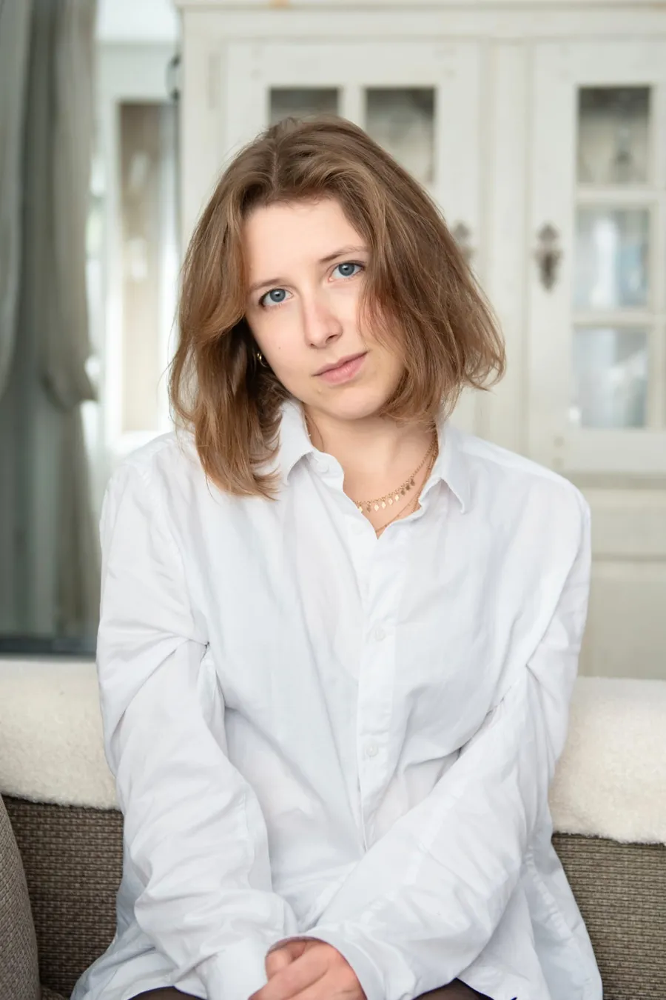

Juliette Ganay
Comédienne
Passionnée de théâtre, formée au Cours Florent.
Lire la bio
Passionnée de théâtre depuis sa découverte à l'âge de 6 ans, elle décide de se former au Cours Florent. À 21 ans, elle sort de l'école avide de challenges, de dépassement et de rencontres.
Le travail collectif et les connexions émotionnelles qui en découlent sont ce qu'elle préfère. Juliette se passionne aussi pour la gymnastique artistique, qu'elle a pratiquée pendant plus de 10 ans, le dessin et la danse contemporaine.